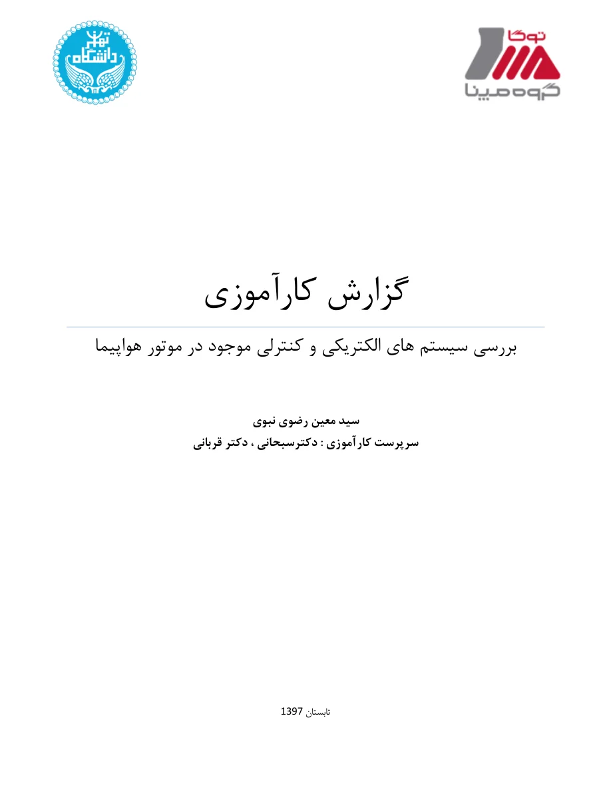
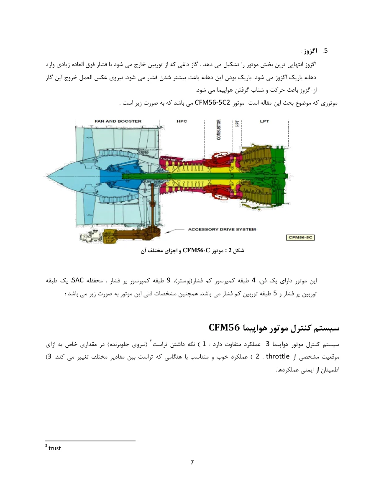

SUMMER 2018
MAPNA · TOGA / ENGINE SYSTEMS
Aircraft engine electrical and control systems
TECHNICAL AREAS
Completed an internship focused on understanding the electrical and control systems of the CFM56-5C2 aircraft engine. The accompanying English technical translation summarizes the report’s discussion of engine sensors and actuators, ECU and FADEC architecture, and how measured engine conditions support monitoring, control, and protection.
FOCUS Reviewed engine instrumentation and control architecture; studied pressure, temperature, shaft-speed, and vibration sensing, along with variable bleed valves, variable stator vanes, and active-clearance-control actuators.


TECHNICAL EXPOSURE
- FADEC and ECUStudied the full-authority digital engine control architecture, dual-channel ECU operation, and the role of control logic in engine performance and protection.
- Engine sensorsReviewed pressure and temperature measurement, N1/N2 shaft-speed sensing, and piezoelectric vibration sensors.
- Actuation and safetyExamined VBV, VSV, and active-clearance-control actuators in relation to compressor stability, turbine clearance, and operating limits.
- Engineering documentationPrepared a technical report combining engine-system diagrams, sensor descriptions, control architecture, and references to engineering literature.
TECHNICAL AREAS Aircraft propulsion · Instrumentation · Digital engine control · Sensor systems · Actuators · Vibration monitoring